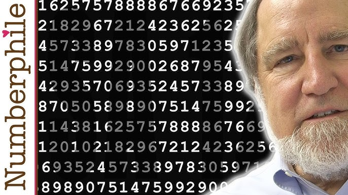

|  |
Evento importanteEl Desafío RSA-129En 1977, cuando se publicó el algoritmo RSA, los autores propusieron un desafío público: factorizar un número de 129 dígitos. Este número, conocido como RSA-129, era considerado en ese momento extremadamente difícil de factorizar con la tecnología existente. El Ataque y sus ImplicacionesEn 1997, un grupo de investigadores coordinado por el matemático Arjen Lenstra logró factorizar el número RSA-129 utilizando una red de computadoras distribuidas en todo el mundo. Este logro fue posible gracias a los avances en algoritmos de factorización y al aumento de la potencia de cómputo. Aunque el número RSA-129 era relativamente pequeño en comparación con las claves RSA utilizadas en aplicaciones reales, este ataque demostró que: Los algoritmos de factorización estaban mejorando: Los avances en algoritmos como el tamiz del cuerpo de números permitieron factorizar números cada vez más grandes. La potencia de cómputo aumentaba rápidamente: La capacidad de procesamiento de las computadoras se duplicaba aproximadamente cada dos años, lo que hacía que las tareas computacionalmente intensivas, como la factorización, fueran cada vez más factibles. El ataque a RSA-129 tuvo importantes consecuencias para la comunidad criptográfica: Necesidad de aumentar el tamaño de las claves: Como respuesta a este ataque, se recomendó aumentar el tamaño de las claves RSA utilizadas en aplicaciones reales para hacerlas más resistentes a futuros ataques. Desarrollo de nuevos algoritmos: Los investigadores comenzaron a explorar nuevos algoritmos de cifrado que fueran más resistentes a los ataques de factorización. Importancia de la evaluación de la seguridad: El ataque demostró la importancia de evaluar periódicamente la seguridad de los sistemas criptográficos y actualizarlos según sea necesario. |
Historia de algun algoritmoRSA¿Qué significa RSA?RSA son las iniciales de sus creadores: Ron Rivest, Adi Shamir y Leonard Adleman. Fue publicado en 1977 y desde entonces ha sido ampliamente utilizado en diversas aplicaciones, desde el comercio electrónico hasta la seguridad de las comunicaciones. ¿Cómo funciona?RSA se basa en la dificultad computacional de factorizar números primos grandes. Cada usuario de RSA tiene un par de claves: Clave pública: Se distribuye libremente y se utiliza para cifrar mensajes. Clave privada: Se mantiene en secreto y se utiliza para descifrar los mensajes cifrados con la clave pública correspondiente. El proceso de cifrado y descifrado implica operaciones matemáticas complejas basadas en teoría de números. Aunque el principio es relativamente sencillo, la implementación requiere de potentes herramientas matemáticas y computacionales. ¿Por qué es tan seguro?Asimetría: La clave pública no puede ser utilizada para descifrar mensajes, lo que garantiza la confidencialidad. Basado en problemas matemáticos difíciles: Factorizar números primos grandes es un problema computacionalmente intensivo, lo que hace que sea prácticamente imposible romper el cifrado RSA con la tecnología actual. Flexibilidad: RSA puede ser utilizado para cifrar mensajes y también para firmar digitalmente, lo que garantiza la autenticidad y la integridad de los datos. Aplicaciones de RSAComercio electrónico: Protección de transacciones en línea. Correo electrónico: Cifrado de mensajes y firmas digitales. VPN: Creación de túneles seguros para la transmisión de datos. Infraestructura de clave pública (PKI): Gestión de certificados digitales y autenticación de usuarios. Limitaciones de RSARendimiento: RSA es un algoritmo relativamente lento en comparación con otros algoritmos de cifrado simétrico. Por esta razón, a menudo se combina con otros algoritmos para mejorar el rendimiento. Tamaño de las claves: Las claves RSA pueden ser muy grandes, lo que puede afectar el rendimiento de las aplicaciones. Vulnerabilidad a ataques cuánticos: Se espera que las computadoras cuánticas puedan romper el cifrado RSA en el futuro. |

|
BiografiaLeon Battista AlbertiLeon Battista Alberti, figura destacada del Renacimiento italiano, fue mucho más que un simple arquitecto. Sus intereses abarcaron diversas disciplinas, desde la pintura y la escultura hasta la lingüística y la filosofía. Sin embargo, es en el campo de la criptografía donde su legado brilla con especial intensidad. Nacido en Génova en 1404, Alberti fue un auténtico "homo universalis". Su curiosidad insaciable lo llevó a explorar múltiples áreas del conocimiento, dejando una huella imborrable en cada una de ellas. Su obra más famosa en el ámbito de la criptografía, "De Componendis Cyphris", escrita alrededor de 1466, es considerada el primer tratado sobre criptografía en Occidente. Aportes a la CriptografíaCifrado Polialfabético: Alberti es reconocido como el inventor del primer cifrado polialfabético conocido. A diferencia de los cifrados monoalfabéticos, que utilizan una única sustitución para cifrar todo el mensaje, los cifrados polialfabéticos emplean varias sustituciones, lo que los hace mucho más difíciles de romper. Discos de Alberti: Para facilitar el proceso de cifrado y descifrado, Alberti diseñó unos ingeniosos dispositivos conocidos como discos de Alberti. Estos discos concéntricos, con alfabetos inscritos en sus bordes, permitían cambiar fácilmente de una sustitución a otra durante el cifrado. Análisis de Frecuencias: En su tratado, Alberti también analiza los cifrados monoalfabéticos y explica el método del análisis de frecuencias, una técnica fundamental en la criptografía clásica para descifrar mensajes. Código de Recifrado y Caracteres Nulos: Alberti introdujo conceptos como el código de recifrado y el uso de caracteres nulos para aumentar la seguridad de sus cifrados. |